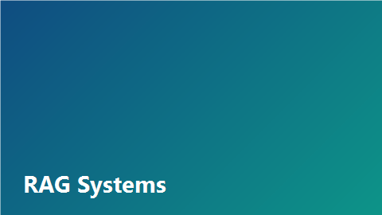

СтатьяBuilding Production RAG Systems
20 марта 2026 · arXiv / Medium
Резюме
Статья описывает полный цикл построения RAG-системы для корпоративной базы знаний: ingestion, chunking, embedding через FoundryModels, гибридный retrieval и reranking в закрытом контуре.
Для СВА релевантны сценарии поиска по регламентам и методологиям аудита с цитированием источников.
#RAG
#LLM
#pgvector